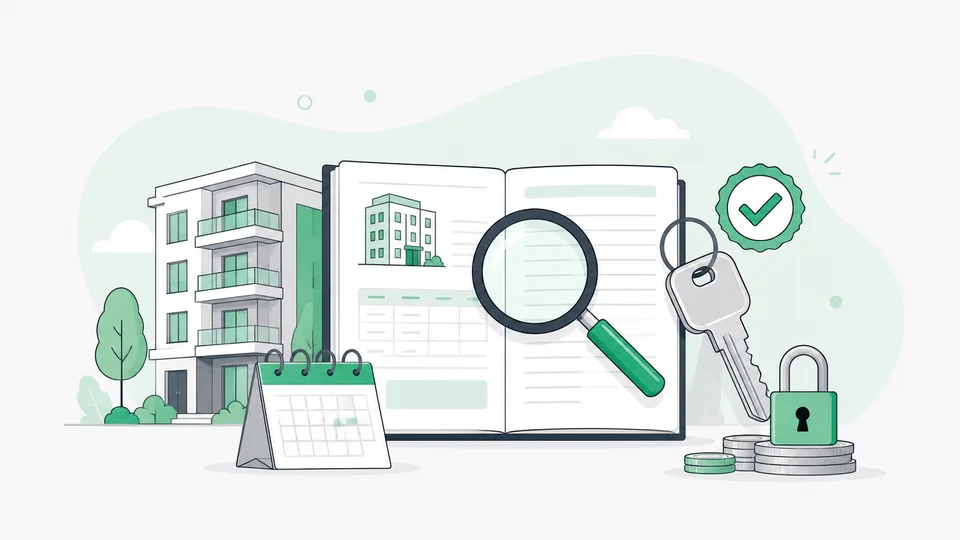

전세 계약 전·후 필수 체크리스트
전세 사고는 대개 계약 전에 넘긴 서류 한 장에서 시작됩니다. 등기부등본에서 무엇을 보고, 잔금 후 며칠 안에 무엇을 해야 하며, 전세보증보험이 왜 거절되는지를 계약 전 → 잔금일 → 잔금 후 순서로 정리했습니다.

계약금을 보내기 전, 이 다섯 가지
전세 계약에서 가장 비싼 실수는 계약금을 먼저 보내고 서류를 나중에 보는 것입니다. 계약금을 걸기 전에 아래 항목을 확인하면, 나중에 돌이킬 수 없는 사고의 대부분을 막을 수 있습니다.
- 1등기부등본과 계약서의 임대인이 같은 사람인가등기부등본상 소유자와 계약서의 임대인이 다르면 대리권(위임장·인감증명)을 확인해야 합니다. 신탁등기가 되어 있으면 수탁자(신탁회사)와 계약해야 효력이 있습니다.
- 2갑구에 경매·압류·가압류가 없는가경매개시결정, 압류, 가압류, 가처분, 가등기가 하나라도 있으면 계약을 멈추는 편이 안전합니다.
- 3을구의 근저당 채권최고액이 얼마인가채권최고액은 실제 빚보다 10~20% 큰 금액입니다. 시세 대비 비중이 60%를 넘으면 보증보험 가입이 어려워집니다.
- 4선순위 채권과 내 보증금을 더하면 집값의 90% 이내인가이 한 줄이 보증보험 가입 가능 여부를 가장 크게 가릅니다. 다가구주택은 다른 세입자의 보증금까지 선순위로 계산합니다.
- 5건축물대장 용도와 위반건축물 표기근린생활시설·공관 등 주택이 아니거나 위반건축물로 표기된 집은 보증보험이 되지 않습니다(아파트는 위반건축물 예외).
여기에 두 가지를 더 확인합니다. 임대인의 국세·지방세 완납증명서와 전입세대확인서입니다. 완납증명서는 집주인이 세금을 밀리지 않았는지 보는 서류이고, 전입세대확인서는 그 집에 이미 다른 세대가 전입해 있는지 보는 서류입니다. 다가구주택이라면 타 전세계약 체결내역 확인서까지 받아 선순위 보증금 총액을 확인하세요.
등기부등본 읽기 — 갑구·을구에서 무엇을 보나
등기부등본은 표제부, 갑구, 을구 세 부분으로 나뉩니다. 표제부는 건물 자체의 정보, 갑구는 소유권에 관한 기록, 을구는 소유권 외의 권리(근저당·전세권) 기록입니다. 전세 계약에서 문제가 되는 것은 대부분 갑구와 을구입니다.
| 구분 | 보는 항목 | 이렇게 걸러냅니다 |
|---|---|---|
| 표제부 | 건물 용도·면적·층 | 주거용인지, 계약서의 주소·면적과 일치하는지 확인 |
| 갑구 | 소유권 이전·제한 | 경매개시결정·압류·가압류·가처분·가등기·신탁등기가 있으면 계약 중단 |
| 을구 | 근저당권 | 채권최고액과 설정일 확인. 실제 채무는 채권최고액의 80~90% 수준으로 봅니다 |
| 을구 | 전세권·지상권 | 기존 전세권이 있으면 말소를 확인한 뒤 잔금. 지상권은 대지 사용 권리라 별도 확인 |
| 말소사항 | 과거 권리 이력 | 최근에 근저당이 반복 설정·말소됐다면 자금 사정을 의심해 볼 수 있습니다 |
채권최고액은 실제 빚이 아닙니다
은행은 대출액의 110~120%를 채권최고액으로 설정합니다. 그래서 을구에 채권최고액 1억 5,000만원으로 적혀 있어도 실제 대출 잔액은 1억 2,500만~1억 3,600만원 수준일 수 있습니다. 반대로 경매로 넘어가면 채권자는 채권최고액까지 우선 변제를 받습니다. 보수적으로 볼 때는 채권최고액을 그대로 빚으로 계산하는 편이 안전합니다.
보증보험 심사도 채권최고액을 기준으로 합니다. 그래서 "실제 대출은 얼마인데요"라는 설명은 심사에서 통하지 않습니다. 임대인에게 대출 잔액 증명을 요청해 확인하고, 계약서에 근저당 말소 조건을 넣으세요.
선순위 채권과 내 보증금의 합 — 숫자로 보기
HUG 전세반환보증의 보증한도는 주택가격 × 90% − 선순위채권입니다. 예를 들어 주택가격이 4억원이고 근저당 채권최고액이 1억 5,000만원이라면 계산은 이렇게 됩니다.
보증한도 = 3억 6,000만원 − 1억 5,000만원 = 2억 1,000만원
보증금 2억원이면 선순위 비중은 3억 6,000만원의 41.7%로 60% 이내, 보증금과 선순위를 더한 3억 5,000만원도 3억 6,000만원 이내입니다. 이 조건이면 가입 심사를 통과할 수 있습니다.
같은 집에서 보증금이 2억 3,000만원으로 올라가면 합계가 3억 8,000만원이 되어 한도를 넘습니다. 이때는 보증금을 낮추거나, 임대인에게 근저당 감액을 요구하거나, 보증금 상한이 다른 기관을 찾아야 합니다.
계약서에 넣어 두면 좋은 특약
- 잔금일까지 근저당·가압류 말소 — 말소 확인 전에는 잔금을 치르지 않는다는 문구를 넣습니다.
- 잔금일 등기부 변동 시 해제 — 계약 후 잔금 사이에 새 근저당이 설정되면 계약을 해제하고 계약금을 돌려받습니다.
- 보증보험 거절 시 해제 — 가입이 거절되면 계약금을 반환받는 조건입니다.
- 전입신고·확정일자 협조 — 잔금일 당일 협조 의무를 명시합니다.
- 임대인의 조세 체납 시 해제 — 완납증명서 제출과 체납 발생 시 해제 조항입니다.
등기부등본은 계약 전과 잔금일, 두 번 봅니다. 잔금일 아침에 인터넷등기소에서 다시 발급해 변동이 없는지 확인하고, 변동이 있으면 잔금을 미루세요. 잔금은 반드시 계약서상 임대인 명의 계좌로 보내고, 이체 내역을 남깁니다.
잔금 치른 날부터 3일 안에 끝내는 일
대항력과 우선변제권은 잔금을 치렀다고 자동으로 생기지 않습니다. 인도(점유)와 전입신고, 확정일자라는 세 가지 행동이 있어야 법적 효력이 생깁니다.
| 권리 | 필요한 요건 | 발생 시점 | 효력 |
|---|---|---|---|
| 대항력 | 주택 인도 + 전입신고 | 전입신고 다음 날 0시 | 집주인이 바뀌어도 임차권을 주장할 수 있음 |
| 우선변제권 | 인도 + 전입신고 + 확정일자 | 세 요건을 모두 갖춘 때 | 경매·공매 배당에서 후순위 채권자보다 먼저 변제 |
| 최우선변제 | 우선변제권 + 보증금이 지역별 기준 이하 | 요건 충족 시 | 근저당보다 먼저 일정 금액을 변제(지역별 금액 확인) |
- 1잔금 당일 — 열쇠를 받고 실제로 점유인도는 서류가 아니라 실제 사용이 기준입니다. 짐을 들이지 않고 열쇠만 받은 상태는 인도로 보기 어려울 수 있습니다.
- 2당일 또는 다음 날 — 전입신고주민센터나 정부24에서 신고합니다. 신고 다음 날 0시에 대항력이 생기므로 하루라도 빨리 처리하세요.
- 3같은 날 — 확정일자주민센터에서 계약서에 확정일자를 받습니다. 인터넷등기소 전자확정일자도 활용할 수 있습니다. 전입신고 전에 받은 확정일자는 배당 순위에서 불리할 수 있습니다.
- 43일 안 — 전입세대확인서 재확인내가 들어간 뒤 다른 세대가 전입해 있지 않은지 확인합니다. 다가구주택은 선순위 보증금 변동을 계속 지켜봐야 합니다.
- 5한 달 안 — 임대차 신고(대상인 경우)보증금 6억원 초과 등 신고 대상 계약이면 30일 안에 신고합니다. 대부분의 전세는 대상이 아니지만, 확인은 필요합니다.
- 6계약기간 절반 전 — 보증보험 가입보증보험은 계약기간의 2분의 1이 지나면 신청 자체가 막힙니다. 잔금일과 전입신고일 중 늦은 날부터 기산합니다.
전세보증보험 — 세 기관 중 어디에 들 수 있나
먼저 구분해야 할 것이 있습니다. 전세대출 보증은 은행이 빌려준 돈을 지키는 보증이고, 전세보증금 반환보증은 내 보증금을 지키는 보증입니다. 전세대출을 받았다고 내 보증금이 자동으로 보호되지는 않습니다. 다만 HUG 전세안심보증(옛 전세금안심대출보증)은 대출 보증과 반환보증이 한 상품으로 묶여 있어 따로 들 필요가 없습니다.
| 구분 | HUG 전세반환보증 | HF 일반전세지킴보증 | SGI 전세금보장신용보험 |
|---|---|---|---|
| 가입 대상 | 계약서상 임차인 누구나 | HF 전세자금보증 대출을 이용 중인 세대주 | 계약서상 임차인 |
| 보증금 상한 | 수도권 7억원, 그 외 5억원 | 수도권 7억원, 그 외 5억원 | 아파트 제한 없음, 그 외 10억원 |
| 보증한도 | 주택가격 × 90% − 선순위채권 | 주택가격 × 90% − 선순위채권 | 기관 심사 기준 |
| 선순위 채권 | 주택가격의 60% 이내(단독·다가구는 추가 기준) | 주택가액의 60% 이내 | 기관 심사 기준 |
| 보증료율(연) | 0.097~0.211% | 0.04~0.18% | 0.229~0.260% |
| 신청처 | 안심전세앱, 위탁은행, 지사 | 대출을 받은 은행 | SGI 지점 |
요율만 보면 HF가 가장 낮지만, HF 전세자금보증 대출을 쓰는 사람만 들 수 있습니다. 전세대출이 없거나 SGI 보증 대출이면 HUG가 기본이고, 아파트 보증금이 7억원을 넘으면 SGI가 남습니다. 결국 비교해서 고르는 것이 아니라 내 대출과 집 조건이 정해 주는 구조입니다. 보증료율은 부채비율(선순위채권 + 보증금 ÷ 주택가액)이 높을수록 비싸지므로, 같은 집이라도 보증금이 높으면 요율이 올라갑니다.
보증료는 얼마인가 — 계산 예시
보증료 = 보증금액 × 연 요율 × 계약기간(일) ÷ 365입니다. 보증금 3억원, 아파트, 부채비율 70% 이하(연 0.107%)라면 2년 기준 64만 2,000원입니다. 무주택자이면서 연소득 5,000만원 이하라면 60% 할인이 적용돼 25만 7,000원 수준이 됩니다. 지자체 전세보증료 지원사업을 함께 쓰면 실제 부담은 더 줄어듭니다.
가입이 거절되는 이유 — 체크리스트
- 금액 — 보증금 + 선순위채권이 주택가격 × 90%를 넘거나, 선순위채권이 주택가격의 60%를 넘는 경우
- 권리 — 갑구에 경매신청·압류·가압류·가처분·가등기가 있는 경우
- 소유 — 건물과 토지(대지권)의 주인이 다르거나, 계약서 임대인과 등기부 소유자가 다른 경우
- 주택 — 위반건축물(아파트 제외), 근린생활시설 등 주택이 아닌 경우
- 계약 — 계약기간 1년 미만, 공인중개사 날인 없는 계약, 보증금 반환채권 양도를 금지하는 특약이 있는 경우
- 전입 — 다른 세대가 전입해 있는 경우(단독·다가구·다중주택 제외)
- 임대인 — 보증금지 대상자이거나, 다른 기관이 대신 갚아 준 보증금을 아직 상환하지 않은 경우
관련 계산기
- 전세 vs 월세 손익 계산기 — 같은 조건에서 전세와 월세의 연 실질 주거비를 비교합니다.
- DSR 대출 한도 계산기 — 전세대출을 포함한 기존 부채로 추가 한도를 계산합니다.
- 정책대출 자격 판독기 — 버팀목·신생아 특례 등 내가 받을 수 있는 상품을 찾습니다.
- 복비·취득세 계산기 — 계약 시 중개보수와 잔금일에 나갈 비용을 계산합니다.
자주 묻는 질문
Q등기부등본은 계약 전에 한 번만 보면 되나요?▾
두 번 봅니다. 계약 전과 잔금일입니다. 계약 후 잔금 사이에 근저당이 새로 설정되는 경우가 있어, 잔금일 아침에 인터넷등기소에서 다시 발급해 변동이 없는지 확인해야 합니다. 변동이 있으면 잔금을 미루고 말소를 확인한 뒤 진행하세요.
Q전입신고만 하면 보증금은 안전한가요?▾
대항력은 생기지만 배당 순위는 확정일자로 정해집니다. 경매로 넘어갔을 때 확정일자가 늦으면 후순위로 밀려 보증금을 다 받지 못할 수 있습니다. 전입신고와 확정일자를 같은 날 처리하는 것이 기본입니다.
Q보증보험에 들었는데 왜 거절되나요?▾
대부분 금액 조건입니다. 보증금과 선순위채권을 더한 금액이 주택가격의 90%를 넘거나, 선순위채권이 60%를 넘으면 가입할 수 없습니다. 이 밖에 위반건축물, 갑구의 권리침해, 계약기간 절반 경과도 흔한 거절 사유입니다.
Q보증료는 임차인과 임대인 중 누가 내나요?▾
임차인이 냅니다. 다만 전세대출 상품에 보증료가 포함되거나, 지자체가 무주택 청년·신혼부부의 보증료를 지원하는 사업이 있습니다. 가입 전에 관할 지자체와 보증기관의 지원 조건을 함께 확인하세요.
참고한 기준
- 주택임대차보호법 제3조(대항력), 제3조의2(보증금의 우선변제), 시행령의 지역별 최우선변제 금액
- 주택도시보증공사(HUG) 전세반환보증 상품개요 — 보증한도·선순위채권·보증료율·보증조건(2026년 11월 확인)
- 한국주택금융공사(HF) 일반전세지킴보증 — 보증대상·보증한도·보증료율(2026년 11월 확인)
- SGI서울보증 전세금보장신용보험 안내 — 보증금 상한·요율(KB국민은행 안내 기준)
- 주택임대차 신고제 — 보증금 6억원 초과 또는 월세 30만원 초과 계약의 30일 내 신고
※ 이 페이지는 일반적인 정보이며 부동산·금융·법률 자문이 아닙니다. 계약 전 등기부등본과 보증기관의 최신 안내를 직접 확인하세요.